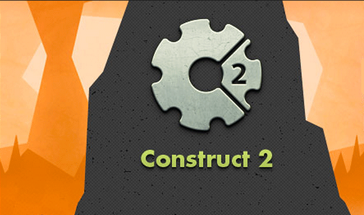

EXPERIENCIA CRIATIVA NAVEGANDO NA COMPUTAÇÃO
PRIMEIRO PROJETO: JOGO EM CONSTRUCT
O jogo foi feito em contruct 3, em estilo top view aonde o objetivo é eliminar uma certa quantidade de naves alienigenas e posteriormente ir a outro planeta. No total eram 6 planetas.